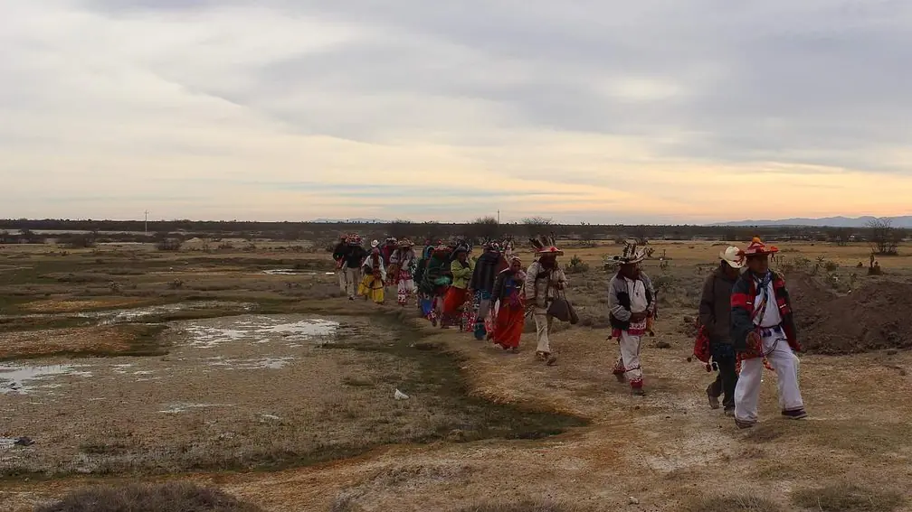

Inicio · La experiencia
La experiencia
Antes, durante y después. Lo que rodea a una experiencia psicodélica cuenta tanto como la sustancia: la pregunta con la que se llega, quién acompaña, cómo se atraviesa lo difícil y qué se hace luego con lo vivido.
Una guía para recorrerla con cuidado, desde lo que saben las tradiciones y desde la mirada de la psicología humanista y transpersonal.
Antes · 1 de 6
Preparar
Una experiencia empieza mucho antes de tomar nada: en la pregunta que la mueve, en el momento de vida en que llega y en el lugar que se elige para ella.
-
La intención Para qué
No es un objetivo que cumplir, sino una dirección. Una pregunta sincera («¿qué necesito ver?», «¿qué me pesa?») orienta mejor que una expectativa. Se escribe, se dice en voz alta y luego se suelta: la experiencia suele responder a su manera.
-
La disposición El set
Cómo llega la persona: su cuerpo, su ánimo, su historia y lo que espera. El cansancio, una crisis reciente o un miedo que no se ha hablado también viajan. A veces lo más sabio es esperar a otro momento.
-
El entorno El setting
El lugar, la compañía, la música, la luz, la naturaleza. Un sitio tranquilo y protegido, sin prisas ni obligaciones al día siguiente. Y el entorno amplio: la cultura y el sentido que se da a lo que se va a vivir.

Que la disposición y el entorno pesen tanto como la sustancia tiene nombre desde los años sesenta: set y setting, una expresión que popularizó Timothy Leary1. Dos décadas después, el psiquiatra Norman Zinberg mostró, estudiando a personas que consumían de forma controlada, que el efecto depende tanto de la persona y de su contexto como de lo que se toma2.
Las tradiciones lo cuidaban desde mucho antes. El curandero amazónico pide una dieta y días de retiro antes de la ayahuasca; la velada mazateca de hongos se hace de noche, a oscuras y con cantos; la peregrinación wixárika a Wirikuta empieza semanas antes, con ofrendas y renuncias3.
En la práctica, preparar es sencillo: dormir bien los días de antes, comer ligero, dejar resueltas las obligaciones, hablar con quien va a acompañar de lo que preocupa y de lo que se espera, y elegir con calma el lugar y la música.
Antes · 2 de 6
Cuidarse
Cuidar el cuerpo y la cabeza no le quita misterio a la experiencia: le da suelo. Son pautas que valen para cualquier medicina; la guía de cada una añade las suyas.
Saber qué es
Fuera del ámbito médico, lo que se anuncia no siempre es lo que hay. Un servicio de análisis de sustancias permite saber qué contiene una muestra.
Mirar las mezclas
Las combinaciones más delicadas son los IMAO (la ayahuasca o la ruda siria) con antidepresivos, MDMA o estimulantes, y el litio con los psicodélicos clásicos. Con cualquier medicación, conviene preguntar antes a un profesional.
Conocer la propia historia
Quien tiene antecedentes propios o familiares de psicosis o de trastorno bipolar es más vulnerable a una crisis. Y algunas medicinas, como la ibogaína, piden un corazón sano.
No ir a solas
La primera vez, y siempre que se pueda, con alguien sobrio y de confianza que esté presente todo el tiempo.
Darse tiempo
Un día entero por delante y otro tranquilo después. Nada de conducir ni de decisiones que no puedan esperar.
Ir poco a poco
Con una medicina que no se conoce, empezar con prudencia: siempre se puede volver otro día.
Durante · 3 de 6
Acompañar
Quien acompaña no guía el viaje: lo sostiene. Su tarea es estar presente, cuidar lo práctico y confiar en el proceso de la otra persona.
Lo ideal es alguien de confianza, sobrio, que conozca estos estados por dentro y que no se vaya en ningún momento. No hace falta que hable mucho: casi todo su trabajo es invisible. Vigila que haya agua, mantas y una temperatura agradable, cuida la música y la luz, y está disponible sin imponerse4.
Antes de empezar se hablan los acuerdos: qué contacto se quiere (de apoyo, nunca sexual), qué hacer si la persona quiere levantarse o salir, y una señal sencilla para pedir ayuda. Lo acordado se respeta durante toda la experiencia.
Lo que ayuda
- Una presencia tranquila, a la vista.
- Escuchar más que hablar.
- Recordar, si hace falta, que todo pasa y que está a salvo.
- Cuidar lo práctico: agua, abrigo, música, luz.
- Respetar los silencios y los acuerdos.
Lo que no ayuda
- Interpretar lo que vive la otra persona.
- Empujar para que «pase algo».
- Distraer de lo que aparece, aunque cueste verlo.
- Estar con el móvil o con prisa.
- Tocar sin haberlo acordado antes.
Durante · 4 de 6
Experiencias difíciles
A veces la experiencia lleva a lugares oscuros: miedo, tristeza, confusión, la sensación de perderse o de morir. No suele ser un error del viaje; muchas veces es por donde pasa.
Si lo estás viviendo
- Respira despacio, con el vientre.
- Recuerda que viene de la medicina y que pasará.
- No luches: acércate con curiosidad. Lo que se mira de frente suele cambiar.
- Cambia algo pequeño: la postura, la música, la luz, una manta.
- Pide la mano o la voz de quien te acompaña.
Si acompañas
- Calma en la voz y en el cuerpo; menos palabras.
- Recuérdale dónde está, quién eres y que está a salvo.
- No discutas lo que ve ni le pongas significado.
- Un lugar más tranquilo, agua, abrigo.
- Quédate: tu presencia es lo que más sostiene.
Confía, suelta, ábrete.
Tres palabras de las pautas de seguridad de la investigación con psicodélicos6: una manera de no huir.
Arnold Beisser lo llamó la teoría paradójica del cambio: uno cambia cuando se vuelve lo que es, no cuando intenta ser lo que no es7. Ante lo difícil, dejar de huir suele ser lo que transforma.
Stanislav Grof observó que muchas de estas vivencias siguen un arco de muerte y renacimiento: lo más oscuro suele preceder a la apertura8.
En una encuesta a casi 2.000 personas que habían pasado un mal viaje con hongos, más de ocho de cada diez dijeron después que les había servido; a una de cada trece le dejó síntomas por los que buscó ayuda9.
Cuándo pedir ayuda. Si aparece un problema serio del cuerpo, como dolor en el pecho, mucho calor con confusión, convulsiones o pérdida de conocimiento, se llama al 112 sin esperar. Si la persona está inconsciente y respira, se la deja de lado, en posición lateral de seguridad.
Después · 5 de 6
Integrar
Lo que se abre en unas horas puede tardar meses en asentarse. Integrar es traer lo vivido a la vida: al cuerpo, a las relaciones y a las decisiones.
Los primeros días
- Descansar, comer sencillo y pasar tiempo en la naturaleza.
- Escribir o dibujar lo que se recuerde, sin interpretarlo todavía.
- No tomar decisiones grandes en caliente.
Las semanas siguientes
- Contarlo a alguien que escuche sin juzgar.
- Volver a la intención: ¿qué respondió la experiencia?
- Si algo quedó removido, buscar un círculo de integración o a un profesional que conozca estos estados.
Con el tiempo
- Los cambios pequeños y sostenidos cuentan más que la revelación.
- Prácticas que mantengan la puerta abierta: meditación, respiración, movimiento, arte.
- Dejar que el sentido madure: a veces llega años después.
Una experiencia intensa puede dejar claridad, ternura y ganas de cambiar; también cansancio, preguntas abiertas o una sensibilidad a flor de piel. Todo eso es material de integración10. No hace falta entenderlo enseguida: lo importante es no dejarlo caer en el olvido ni convertirlo en una obsesión.
En las tradiciones, lo vivido vuelve a una comunidad que sabe escucharlo y a unos mitos que le dan lugar. Fuera de ellas hay que construir ese sostén: personas, prácticas y tiempo.
Si cuesta volver. Si pasados unos días la angustia no cede, no se puede dormir o aparecen ideas de hacerse daño, conviene pedir ayuda profesional enseguida. En España, el 024 atiende a cualquier hora y, en una urgencia, el 112.
Después · 6 de 6
Profundizar
Muchas personas vuelven hablando de lo que no cabe en palabras: la unidad con todo, la disolución del yo, morir y renacer, un amor sin objeto. Son las experiencias que la psicología transpersonal se toma en serio, sin reducirlas a síntomas ni darlas por demostradas.
Lo biográfico
Recuerdos, emociones y asuntos pendientes de la propia vida, a menudo con una viveza nueva.
Lo perinatal
El nacimiento, la muerte y el renacimiento: la lucha, la entrega y la liberación.
Lo transpersonal
Más allá del yo: la unidad con los demás y con la naturaleza, otras épocas y culturas, lo sagrado.
En 1902, el filósofo William James describió cuatro rasgos de la experiencia mística que todavía sirven para reconocerla12:
- InefableNo cabe en palabras: quien la vive siente que no la puede contar.
- NoéticaSe vive como un conocimiento, no como una opinión.
- PasajeraDura poco, pero deja huella durante años.
- PasivaNo se fabrica: llega, y la persona se siente sostenida por algo mayor.
Abraham Maslow las llamó experiencias cumbre y las encontró también lejos de cualquier sustancia: en el amor, en el arte, en la naturaleza13. William Richards, que acompañó estas experiencias durante décadas de investigación, les dedicó Conocimiento sagrado14.
Estos estados no son patrimonio de las sustancias. Se llega a ellos por otros caminos:
- La respiración holotrópica
- La meditación
- El ayuno y el retiro
- El canto y la danza ceremonial
- La naturaleza
Biblioteca
Para leer despacio
Diez libros para ir más hondo en cada parte del camino. Cada lomo lleva a su ficha en la Biblioteca.
- Drug, Set, and SettingZinberg
- The Psychedelic
Explorer’s GuideFadiman - La experiencia
psicodélicaLeary y otros - The Secret ChiefStolaroff
- Emergencia espiritualS. y C. Grof
- Integración psiquedélicaAixalà
- Conocimiento sagradoRichards
- The Doors of PerceptionHuxley
- La respiración
holotrópicaS. y C. Grof - The Healing JourneyNaranjo
Más de 800 libros, con buscador y filtros, en la Biblioteca.
Dudas
Preguntas frecuentes
¿Hace falta alguien que acompañe?
Es lo que más cuida. Sobre todo las primeras veces y con las medicinas que se viven con más intensidad, tener al lado a alguien sobrio y de confianza cambia la experiencia. Muchas tradiciones no la conciben de otra manera.
¿Un mal viaje es una mala experiencia?
No necesariamente. Lo difícil es a menudo lo que más enseña, sobre todo si se atraviesa acompañado y se integra después. Pero no hay que buscarlo ni forzarlo: el cuidado de antes y de durante hace que lo difícil tenga dónde apoyarse.
¿Cuánto dura la integración?
No tiene plazo. Los primeros días son los más delicados; lo importante se asienta en semanas o meses, y a veces una experiencia sigue dando sentido años después.
¿Qué es una experiencia transpersonal?
La que va más allá de la identidad de cada día: sentirse uno con la naturaleza o con los demás, vivir la muerte y el renacimiento, encontrar algo que se siente sagrado. La psicología transpersonal las estudia sin reducirlas a síntomas ni darlas por demostradas.
¿Se puede llegar a estos estados sin sustancias?
Sí. La respiración holotrópica, la meditación, el ayuno y el retiro, el canto y la danza ceremonial o la propia naturaleza llevan a estados parecidos. Maslow encontró experiencias cumbre en el amor, el arte y la vida de cada día.
¿Qué diferencia hay entre esta página y Psiconáutica?
Esta página es la guía de APDER para antes, durante y después. Psiconáutica es la traducción al español de PsychonautWiki: una enciclopedia de efectos y sustancias, con su propio aspecto, para consultar a fondo.
En APDER
Sigue por aquí
Fuentes
Referencias
- Leary T, Metzner R, Alpert R. The Psychedelic Experience: A Manual Based on the Tibetan Book of the Dead. Nueva York: University Books; 1964.
- Zinberg NE. Drug, Set, and Setting: The Basis for Controlled Intoxicant Use. New Haven: Yale University Press; 1984.
- Myerhoff BG. Peyote Hunt: The Sacred Journey of the Huichol Indians. Ithaca: Cornell University Press; 1974.
- Fadiman J. The Psychedelic Explorer’s Guide: Safe, Therapeutic, and Sacred Journeys. Rochester (Vermont): Park Street Press; 2011.
- Rogers CR. The necessary and sufficient conditions of therapeutic personality change. J Consult Psychol. 1957;21(2):95-103.
- Johnson MW, Richards WA, Griffiths RR. Human hallucinogen research: guidelines for safety. J Psychopharmacol. 2008;22(6):603-620.
- Beisser AR. The paradoxical theory of change. En: Fagan J, Shepherd IL, eds. Gestalt Therapy Now. Palo Alto: Science and Behavior Books; 1970.
- Grof S. Realms of the Human Unconscious: Observations from LSD Research. Nueva York: Viking Press; 1975.
- Carbonaro TM, Bradstreet MP, Barrett FS, et al. Survey study of challenging experiences after ingesting psilocybin mushrooms: acute and enduring positive and negative consequences. J Psychopharmacol. 2016;30(12):1268-1278.
- Aixalà M. Psychedelic Integration: Psychotherapy for Non-Ordinary States of Consciousness. Santa Fe: Synergetic Press; 2022.
- Grof S, Grof C, eds. Spiritual Emergency: When Personal Transformation Becomes a Crisis. Los Ángeles: Tarcher; 1989.
- James W. The Varieties of Religious Experience: A Study in Human Nature. Nueva York: Longmans, Green; 1902.
- Maslow AH. Religions, Values, and Peak-Experiences. Columbus: Ohio State University Press; 1964.
- Richards WA. Sacred Knowledge: Psychedelics and Religious Experiences. Nueva York: Columbia University Press; 2016.
- Grof S, Grof C. Holotropic Breathwork: A New Approach to Self-Exploration and Therapy. Albany: SUNY Press; 2010.
APDER divulga: no ofrece sesiones ni terapias, y no anima al consumo de ninguna sustancia. Revisada el .